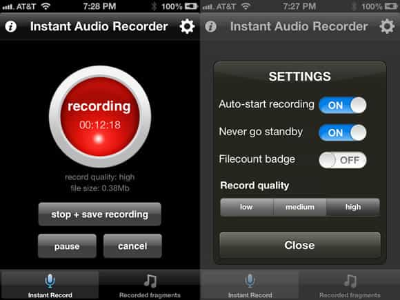

< < < Back
How I Avoided A False Domestic Abuse Charge – Return Of Kings
A couple months back I hooked up with a girl I met at an auto parts store. I mentioned her near the end of this article then gave a little more detail in this RVF post when talking about the application of abundance mentality to move her back in my rotation when I added another chick a couple weeks later.
Even though she was an alcoholic (she drank seven days a week), she treated me quite well from beginning to end. She cooked for me, bought me cigarettes, provided me with great sex, and was actually pretty good company.
Despite the fact she did this every day, she treated me quite well
I never even considered making her anything more than a fuck buddy on account of her alcoholism, tattoos, and the fact that she was almost too easy to fuck. But I did spend a fair amount of time with her, which caused her to become more and more attached.
After a while I decided it was time to cut her loose. Normally when I cut a girl off I don’t do it in one fell swoop. I usually just gradually reduce my time with her until she’s completely weened off of me, which makes for a smooth and painless ordeal…unless, of course, she’s crazy…..which this chick absolutely was.
The Gambit
Never bought it for a second
I started my “time reduction” process when she texted and asked what time I was coming over a couple of days earlier than she normally does. I figured then was as good a time as any to start letting her down easy so I texted her back and told her I was going to have to take the next couple of weekends off.
Predictably, she started frantically texting me and giving me the third degree about why I’m “doing this,” if there’s another girl, if I’m getting tired of her, etc. I texted back and told her it was none of those and that I just had some things I needed to take care of which required a little more focus and time, and that we’d pick up right where we left off.
Of course, the plan was to hook back up in two weeks, then two weeks after that, then slowly fade out of her life. Most girls know a brush off when they see one and will simply move on to the next dude on their phone to assuage their fragile egos.
But “Jennifer” was having none of that, and attempted an all-too-familiar scheme to keep me around for just a little bit longer by calling and telling me she was pregnant.
The Counter

This isn’t the first time a girl has attempted to lock me down by faking a pregnancy, so I didn’t freak out. I calmly and coolly told her to sit tight and that I’d be there in a bit, then drove to a drug store a few blocks from my place and purchased two pregnancy tests.
I’d was sure she was lying but it would be disingenuous of me to say I wasn’t a little concerned. Although I wrapped my dick each and every time I fucked her and never let her handle my condoms, slip ups can happen from time to time.
Jennifer had no idea what was coming next when I walked into her house, which was exactly what I wanted. I instructed her to take the pregnancy test immediately. She was surprised and hesitant but she obliged lest she sees her plan blow up in her face less than an hour after hatching it.
Pro tip: Make her take it TWICE…it’s worth the extra coin
It was negative, as was the second, which exposed the lie she was trying to perpetuate. Realizing my exit was imminent she turned on the water works and started the drama. I, of course, was a stoic as a statue and let her cry and ramble and apologize to me without a single word back.
When she was finished I told her I was leaving. But once again she upped the ante by picking up the phone and calling the cops to report a domestic disturbance.
Now I’ve been in some pretty sticky situations with women, but this was a first for me. I hadn’t laid a hand on her but I knew that leaving her house was as good as admitting guilt in the eyes of the gyno-centric laws. So I kept my wits about me, calmly sat on her couch, opened an audio recording app on my phone and waited for the police to arrive.
Self Incrimination

It didn’t take long for the cops to get to her house but during the fifteen minute wait Jennifer went on a verbal tirade that would be the difference between me going to jail and going home.
Long story short, she yelled and screamed and said she was going to tell the cops I had choked and slapped her and that they would believe her story without question. She even went so far as to say “even if you don’t get convicted you’ll be locked up for three days anyways!”
I immediately saw an opportunity to strengthen my case and pounced. I calmly said to her: “Why are you doing this? I haven’t laid a hand on you.”
She took the bait hook, line, and sinker and frantically said: “Because you’re being a fucking asshole!” To which I replied kindly with a hint of genuine concern, “What can I do to stop this?”
“Just stop with all this bullshit,” she said. “I’m sorry I lied about being pregnant but it’s the only way I could get you over here to find out what was really going on.”
I looked at her with faux concern on my face and said, “That’s all this was about?”
“Yeah,” she said softening her tone.
“If you wanted an explanation all you had to do was ask. There’s no need to lie about me beating you up because what good am I to you if I’m in jail, right?”
“I know,” she said. “I’m sorry, Donovan I just freaked out. I didn’t want to lose you in my life.”
“No big deal,” I said kicking my feet up on her coffee table. I was far from relaxed but I wanted her to think I was to dilute the extremely thick tension in the room. It seemed to work because she followed my lead and loosened up a bit…
…until we heard a knock at the door.
Exhibit A(udio)

Jennifer’s eyes were as large as dinner plates as her hands covered her mouth. She had forgotten she’d called the cops.
“I’ll just tell them it was a big misunderstanding,” she whispered. I shrugged my shoulders and gestured to the door hoping against all hope my phone’s audio recording app was as advertised.
Jennifer walked to the door then turned around and ran back where she whispered, “What if we just don’t answer the door?”
The cops knocked again but this time it was harder.
“They’ll break down the door because they think I’m in here beating your ass. If you don’t let them in, they’ll let themselves in. Just answer the fucking door.” By this point we’re both on edge but I kept my cool on the outside.
Finally (and reluctantly) Jennifer walks to the door and let the cops in. My heart hammered against my chest as they asked Jennifer if she was alright and a number of other bullshit loaded questions they throw at her to make me look guilty, regardless of the answers she gave them.
Lies upon lies
Jennifer had painted herself in a corner and she knew it. She told the dispatcher I had choked and slapped her, so she had to stick to her story with the police, which sounded less than convincing when she repeated it in front of them. Reading the body language of both cops (who were both men) made me extremely nervous even with the ace I had up my sleeve.
After what seemed like an eternity of Q&A between Jennifer and the cops, they turned their attention to me. I was extremely careful not to show aggressive or guilty posture, and not to interrupt them during the time they interrogated her. I had been on the couch with my feet on her coffee table the entire time and stayed completely silent until they asked me what my version of the story was.
I didn’t say a word. I simply reached for my phone on the coffee table, opened the app, and played the recording silently praying to every God I could think of that it audible enough to get me off…
…and to my extreme relief, our conversation rang through the speakers on my phone as clear as a bell. With the exception of the whispering between her and I when the cops were knocking at the door, those officers heard every word.
Jennifer could do nothing but stand there with a horrified look on her face. A few minutes in she attempted to say something but was quickly shushed by one of the officers.
After the recording finished playing, Jennifer was in tears. When one of the officers placed her in handcuffs and read her her rights as she was being arrested for false accusation, she began sobbing and apologizing. Neither myself or the two cops said anything as she was led out of her house and into their squad car.

Her water works didn’t faze any of us
One of the cops stayed behind and asked if I wanted to take out a restraining order. I declined because a) Jennifer didn’t know where I lived and b) I knew a restraining order would be useless and unenforced on the off chance she actually tried something. I just wanted to get the fuck out of there and out of her life.
The officer shook my hand, apologized for what had happened and said “If more people do what you did and record these domestic disturbances, we’d probably be arresting a lot more accusers.” I just nodded and left.
Conclusion
I could sit here and say that game saved me that night, but that would be far from the truth. If not for my phone recording what really went down, I’d have gone to jail that night regardless of the amount of game I had. And that’s a fact.
I haven’t seen or heard from Jennifer since. I’m not sure exactly how much time she spent in jail but I’m fairly certain it wasn’t long.
Fucking with crazy girls is a mathematical inevitability. The number of emotionally damaged females in this country who can and will pull this type of bullshit is growing by the second, so it stands to reason that there’s a pretty good chance you’ll encounter a woman like this at some point in your pussy plundering lives.
Do yourself a favor and RECORD EVERYTHING. Otherwise you might find yourself on the wrong end of a false accusation, and that’s a no-win situation for you whether you’re guilty or not.
Read Next: How I Dealt With A False Rape Accusation